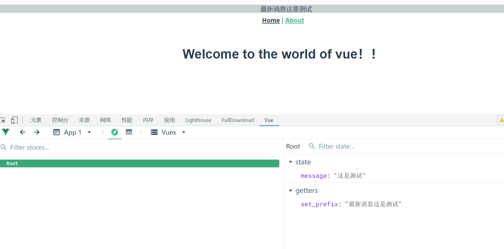
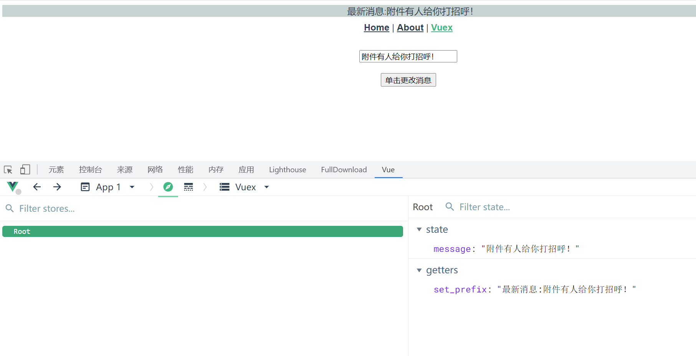

Contents
10. Vue.js的状态管理库Vuex和Pinia¶
当下的前端技术（尤其是单页面开发）会经常提到状态管理这个概念，Vue.js和React.js都提供了很好的状态管理解决方案，分别是Vuex和Pinia。
10.1. 1. Vuex¶
10.1.1. 1.1 状态管理与store模式¶
对于一个基本的Vue.js组件，其所有的数据都存放在data对象中，而该对象拥有自己的作用域，想要在其他的组件或路由中访问这些数据并不是一件容易的事情。
如果这些数据内容需要被多个实例共享，使用缓存或路径参数的方式传输数据过于烦琐且容易出错，所以单页面应用提供了状态管理这个概念。
Vue.js中的状态管理提供了两种方案：
store模式
Vuex。
本节只介绍store模式，后面会详细介绍Vuex。
store模式无须安装模块，理解起来非常简单，相当于将数据挂载在根节点中（类似全局变量），然后在每个实例中声明data。
这样在一处更新数据时，所有的内容都会更新，因为其本身指向的是同一个对象。这样做的缺点是：数据的改变不会留下变更记录，并且调试困难。
10.1.2. 1.2 使用Vuex的情形¶
并不是所有的情况都适合使用Vuex，或者说大量的业务需求并不需要对数据进行状态管理。
数据在单组件环境中可以完成大部分的业务需求，并非要必须使用状态管理，读者不需要为了使用状态管理而使用Vuex。
一些小项目如果引入Vuex进行状态管理，不仅会使原本逻辑清晰的代码和结构变得复杂，甚至会增加开发难度，造成代码冗余。
所以官方认为，如果不是大中型单页应用，不需要引入Vuex，即使需要同步数据，自带的store模式也足够使用。
如果需要构建大中型单页引用，那么Vuex是必然的选择。
采用一个新的Vue.js工程实现Vuex。
（1）使用如下命令创建并成功启动一个Vue.js项目。在配置工程时，添加Vuex和vue- router的支持
vue create vuex-test
（2）等待项目初始化成功，所有的依赖包会自动安装好，其中package.json的代码如下：
{
"name": "vuex-test",
"version": "0.1.0",
"private": true,
"scripts": {
"serve": "vue-cli-service serve",
"build": "vue-cli-service build",
"lint": "vue-cli-service lint"
},
"dependencies": {
"core-js": "^3.8.3",
"vue": "^3.2.13",
"vue-router": "^4.0.3",
"vuex": "^4.0.0"
},
"devDependencies": {
"@babel/core": "^7.12.16",
"@babel/eslint-parser": "^7.12.16",
"@vue/cli-plugin-babel": "~5.0.0",
"@vue/cli-plugin-eslint": "~5.0.0",
"@vue/cli-plugin-router": "~5.0.0",
"@vue/cli-plugin-vuex": "~5.0.0",
"@vue/cli-service": "~5.0.0",
"@vue/eslint-config-standard": "^6.1.0",
"eslint": "^7.32.0",
"eslint-plugin-import": "^2.25.3",
"eslint-plugin-node": "^11.1.0",
"eslint-plugin-promise": "^5.1.0",
"eslint-plugin-vue": "^8.0.3"
}
}
这样就初始化了一个自带Vuex的状态管理项目。通过代码可以对所有页面中的状态进行控制。
（3）使用Vuex管理，需要先进行配置。基本的配置方式和vue-router类似，需要实例化一个Vuex.Store，并使用Vue.use在全局注册该组件，代码如下：
import { createStore } from 'vuex'
export default createStore({
state: {
},
getters: {
},
mutations: {
},
actions: {
},
modules: {
}
})
（4）最终获得的store对象和自定义的存储数据的对象一样，需要在main.js中引入，并在实例化Vue对象时作为参数传入，代码如下：
createApp(App).use(store).use(router).mount('#app')
10.1.3. 1.3 在Vue.js组件中Getter对象¶
Vuex被注册成一个store之后，可以在全局的组件中使用，如果只需要其中的值，调用$store这个全局对象就可以。
【示例】编写一个基本的全局消息显示程序。
（1）定义一个基本的store，通过页面上方的一个共同组件显示信息，并且在子组件中更改该内容时此处的内容会自动更新。
import { createStore } from 'vuex'
export default createStore({
state: {
message: '这是测试'
},
getters: {
},
mutations: {
},
actions: {
},
modules: {
}
})
（2）store需要在main.js中引入和注册，代码如下：
import { createApp } from 'vue'
import App from './App.vue'
import router from './router'
import store from './store'
createApp(App).use(store).use(router).mount('#app')
（3）编辑App.vue的模板部分和样式部分，增加一个新的路由路径和显示信息的<div>元素，代码如下：
<template>
<div id="app">
<div class="show-message">
{{ $store.state.message }}
</div>
<div id="nav">
<router-link to="/">Home</router-link>
|
<router-link to="/about">About</router-link>
</div>
<router-view/>
</div>
</template>
store中的Getter对象用于获取实例中的state属性，然后对数据进行操作（并非改变数据本身）。这些操作也可以在组件获取store的值后再执行，但使用Getter对象可以增加代码的复用性，提高页面的响应性能。
在store中编写一个Getter对象用于获取states中的数据，并对该数据进行操作，代码如下：
import { createStore } from 'vuex'
export default createStore({
state: {
message: '这是测试'
},
getters: {
set_prefix: state => {
return '最新消息' + state.message
}
},
mutations: {
},
actions: {
},
modules: {
}
})
在Getter对象中定义了一个方法，为原本的数据增加一个字符串前缀。在App.vue中通过该Getter对象获取数据，修改后的模板代码如下：
<template>
<div id="app">
<div class="show-message">
{{ $store.getters.set_prefix }}
</div>
<div id="nav">
<router-link to="/">Home</router-link>
|
<router-link to="/about">About</router-link>
</div>
<router-view/>
</div>
</template>
显示效果如图
通过Getter对象获取数据
10.1.4. 1.4 更新Vuex中的store¶
因为Vue.js中所有的数据绑定都采用单向传输方式，直接对数据进行改写根本不会通知组件，所以组件自然无法获取变化后的数据，此时页面不发生任何变化。这也是Vuex出现的原因。Vuex提供了一个Mutation对象，所有对数据的修改都必须通过该对象进行操作。
修改store中message对象的值。
import { createStore } from 'vuex'
export default createStore({
state: {
message: '这是测试'
},
mutations: {
// set()方法，但是不能直接调用，类似于事件注册
setMessage (state, msg) {
state.message = msg
}
},
getters: {
set_prefix: state => {
return '最新消息:' + state.message
}
},
actions: {},
modules: {}
})
上述代码中定义了一个setMessage()方法，该方法接收两个参数：第一个参数是state本身，
第二个参数用来确定显示的内容。通过调用set_prefix()方法可以修改state中的message对象的值。
注意：如果直接修改state中的数据，则无法通知所有使用该数据的位置实现更新，所以需要使用定义的setMessage()方法修改数据，
即必须使用this.$store.commit()进行“提交”式地调用。
编辑router/index.js文件,编写路由
import { createRouter, createWebHistory } from 'vue-router'
import HomeView from '../views/HomeView.vue'
import VuexTest from '@/views/VuexTest'
const routes = [
{
path: '/',
name: 'home',
component: HomeView
},
{
path: '/about',
name: 'about',
// route level code-splitting
// this generates a separate chunk (about.[hash].js) for this route
// which is lazy-loaded when the route is visited.
component: () => import(/* webpackChunkName: "about" */ '../views/AboutView.vue')
},
{
path: '/vuex-test',
component: VuexTest
}
]
const router = createRouter({
history: createWebHistory(process.env.BASE_URL),
routes
})
export default router
上述代码在路由代码中引入了view/VuexTest.vue文件，该文件用于提供一个按钮和监听事件来更改store对象，
代码如下：
<template>
<div>
<input v-model="text"/>
<br> <br>
<button v-on:click="changeMsg">单击更改消息</button>
</div>
</template>
<script>
export default {
name: 'VuexTest',
data () {
return {
text: ''
}
},
methods: {
// 定义修改方法
changeMsg: function () {
// 该方法必须同步执行
this.$store.commit('setMessage', this.text)
}
}
}
</script>
<style scoped>
</style>
上述代码定义一个文本框并且绑定相应的值，同时绑定按钮的单击事件。单击该按钮，调用store中的mutation对象指定方法名为setMessage()，同时传入一个输入数据的变量。
为了方便使用，可以在App.vue中添加一条跳转标签，代码如下：
<template>
<div id="app">
<div class="show-message">
{{ $store.getters.set_prefix }}
</div>
<div id="nav">
<router-link to="/">Home</router-link>
|
<router-link to="/about">About</router-link>
|
<router-link to="/vuex-test">Vuex</router-link>
</div>
<router-view/>
</div>
</template>
最终显示效果如图

使用store.commit()进行修改当然没有任何问题，如果在组件中直接对其调用，则需要注意mutation对象必须同步执行。
也就是说，该代码下方的所有代码都会在commit()方法执行完成后才会执行。
如果需要异步处理所有的修改，则需要使用Action对象。该对象本质上是在Action中使用mutation，也就是在actions对象中编写commit()方法，代码如下：
import { createStore } from 'vuex'
export default createStore({
state: {
message: '这是测试'
},
mutations: {
// set()方法，但是不能直接调用，类似于事件注册
setMessage (state, msg) {
state.message = msg
}
},
getters: {
set_prefix: state => {
return '最新消息:' + state.message
}
},
// Action的特性是可以异步执行代码。
actions: {
setMessage (context, msg) {
context.commit('setMessage', msg)
}
},
modules: {}
})
Action对象中的方法接收一个和store实例相同的对象（但并不是store实例本身），通过store.dispath()方法指定方法名称和参数，触发对象。修改VuexTest.vue中的代码如下：
<template>
<div>
<input v-model="text"/>
<br> <br>
<button v-on:click="changeMsg">单击更改消息</button>
</div>
</template>
<script>
export default {
name: 'VuexTest',
data () {
return {
text: ''
}
},
methods: {
// 定义修改方法
changeMsg: function () {
// 异步处理
this.$store.dispatch('setMessage', this.text)
}
}
}
</script>
<style scoped>
</style>
Action的特性是可以异步执行代码。
10.1.5. 1.5 Vuex模块的划分¶
大型项目中会产生大量的数据需要通过store管理，每条数据本身至少拥有一个Mutation及更多的Getter对象，这让整个State变得异常庞大。Module对象就是为了解决对象过大的问题而生。
Vuex允许将store分割为模块，每个模块可以拥有自身的state、Mutation和Action，甚至是更小的细分模块。
只需要在Modules对象中添加需要使用的模块，并将所有的子模块注册在全局中，这样就可以将所有的数据对象进行模块化地分类，使整个逻辑代码更加简洁。例如：
import { createStore } from 'vuex'
export default createStore({
state: {
message: '这是测试'
},
mutations: {
// set()方法，但是不能直接调用，类似于事件注册
setMessage (state, msg) {
state.message = msg
}
},
getters: {
set_prefix: state => {
return '最新消息:' + state.message
}
},
actions: {
setMessage (context, msg) {
context.commit('setMessage', msg)
}
},
modules: {
a: moduleA,
b: moduleB
}
})
参考文献：
https://www.e-learn.cn/topic/1805138
注意：默认情况下，模块内部的Action、Mutation和Getter是注册在全局命名空间内的，可以直接使用，也可以通过添加namespaced:true的方式使模块内部的action、mutation和getter成为带命名空间的模块，通过命名空间的不同进行区分和调用。
10.2. 2. Pinia¶
10.2.1. 1.安装¶
使用你喜欢的包管理工具安装pinia
yarn add pinia
# 或者使用 npm
npm install pinia
引入到mian.js中
vue3
// createPinia 是一个函数
import { createPinia } from 'pinia'
app.use(createPinia())
10.2.2. 2.创建store¶
store简单来说就是一个公共数据仓库，
我们把数据放在store中， 其他所有组件都可以访问和修改。
创建一个用户store
/src/store/user.ts
import { defineStore } from 'pinia'
// 第一个参数是应用程序中 store 的唯一 id
// 第二参数是options (配置项)
// 命名规范 use + 相关名词 + Store
export const useUserStore = defineStore('main', {
// other options...
})
创建defineStore很简单， 接收命名为 use + 相关名词 + Store,
第一参数为唯一id， 第二个参数为配置项。
10.2.3. 3.添加store¶
/src/store/user.ts
import { defineStore } from 'pinia'
export const useUserStore = defineStore('main', {
//state是一个函数， 返回的是对应数据
state: () => ({
name: 'shenxiu',
age: 20,
sex: 'male',
qSkill: '斩钢闪'
}),
getters: {
// 箭头函数 推荐
getAddAge: (state) => {
return state.age * 2 + 10
},
getIsAge: (state) => {
return (num, number) => {
return state.age = num
}
},
// 箭头函数写法--不接收参数
getYasuoInfoNoParams: state => `${state.name}，q技能叫做${state.qSkill}`,
// 箭头函数写法--接收参数
getYasuoInfoHaveParams: state => {
// console.log(this) //使用箭头函数的话，这个地方的this是无效的 可以通过state.其他getters的名称 来访问别的getters
return (params) => `${state.name}，q技能叫做${state.qSkill}，${params}`
},
// 普通函数写法--不接收参数
getYasuoInfoNoParams1(state) {
// console.log(this) //在此处this 和 state的值是一样的 可以通过this/state.其他getters的名称 来访问别的getters
// console.log(state)
return `${this.name}，q技能叫做${this.qSkill}`
},
// 普通函数写法--接收参数
getYasuoInfoHaveParams1(state) {
return function (params) {
return `${state.name}，q技能叫做${state.qSkill}，${params}`
}
},
},
actions: {
// 比如发送token 请求token的应用场景
changeName(name,string) {
this.name = name
}
}
})
10.2.4. 4.使用store、Getters、Action 属性¶
/src/App.vue
<template>
<p>这是pinia-vue3教程界面!</p>
<div class="content">
<p>store简单来说就是一个公共数据仓库， 我们把数据放在store中， 其他所有组件都可以访问和修改。</p>
<p>{{ name }}</p>
<p>{{ age }}</p>
<p>{{ sex }}</p>
<el-button size="small" @click="changeName">修改姓名</el-button>
<el-button size="small" @click="patchStore">批量修改</el-button>
<el-button size="small" @click="resetStore">重置状态</el-button>
<!-- 使用getters-->
<p>Getter 完全等同于 Store 状态的 计算值。 它们可以用 defineStore() 中的 getters 属性定义。</p>
<p>---------------------使用getters------------------</p>
<p>{{ store.getAddAge }}</p>
<p>---------------------getter传参--------------------</p>
<p>{{ modifyage }}</p>
<div>
{{ yasuoInfoNoParams }}
</div>
<div>
{{ yasuoInfoHaveParams }}
</div>
<div>
{{ yasuoInfoNoParams1 }}
</div>
<div>
{{ yasuoInfoHaveParams1 }}
</div>
<p>Actions 相当于组件中的 methods。 它们可以使用 defineStore() 中的 actions 属性定义，并且它们非常适合定义业务逻辑。</p>
<p>比如发送token 请求token的应用场景</p>
<p>使用 actions</p>
<el-button @click="setToken">发送token修改name的值</el-button>
</div>
</template>
<script>
import { storeToRefs } from "pinia";
import { useUserStore } from "@/store/pinia";
import {computed} from "vue";
export default {
setup() {
const store = useUserStore();
const yasuoInfoNoParams = computed(() => store.getYasuoInfoNoParams)
const yasuoInfoHaveParams = computed(() => store.getYasuoInfoHaveParams('r技能叫做狂风绝息斩'))
const yasuoInfoNoParams1 = computed(() => store.getYasuoInfoNoParams1)
const yasuoInfoHaveParams1 = computed(() => store.getYasuoInfoHaveParams1('r技能叫做狂风绝息斩'))
const modifyage = computed(() => store.getIsAge(2))
//storeToRefs 将store里面的值转化为响应式
const { name, age, sex } = storeToRefs(store);
const setToken = () => {
store.changeName("zhangsan");
}
//直接修改
const changeName = () => {
store.name = "zhangsan";
}
//批量修改
const patchStore = () => {
store.$patch({
name: "lihua",
age: 18,
sex: "female",
});
}
// 重置到原始状态
const resetStore = () => {
const store = useUserStore()
store.$reset()
}
return {
name,
age,
sex,
store,
changeName,
patchStore,
resetStore,
modifyage,
yasuoInfoNoParams,
yasuoInfoHaveParams,
yasuoInfoNoParams1,
yasuoInfoHaveParams1,
setToken
}
}
}
</script>
<style scoped>
</style>
在Vue3项目中使用pinia代替Vuex进行数据存储
https://www.cnblogs.com/wuhuacong/archive/2022/04/08/16117968.html
pinia-vue3教程
https://zhushenxiu.site/2022/08/10/vue/pinia/
https://www.cnblogs.com/zhaord/p/16187429.html
Pinia 中文文档
10.3. 3.Vuex VS Pinia¶
开发大中型项目的时候，需要用到状态管理器。Vuex 专门为 Vue.js 打造，易学易用。
那么 Pinia🍍 对比 Vuex 有什么优势呢？
更好的 TS 支持
更加轻量，压缩后只有 1KB
去除了 mutation。使用 async + await 处理同步问题
无需手动添加 store，创建的 store 会在使用时自动添加
缺点就是还很新，处于起步阶段，社区还有待加强。
🍍的开发者是 vuex 的核心成员，所以 vue官方也推荐用 🍍 作为未来状态管理器的首选。
🏷️结论：选用 Pinia 作为状态管理器。